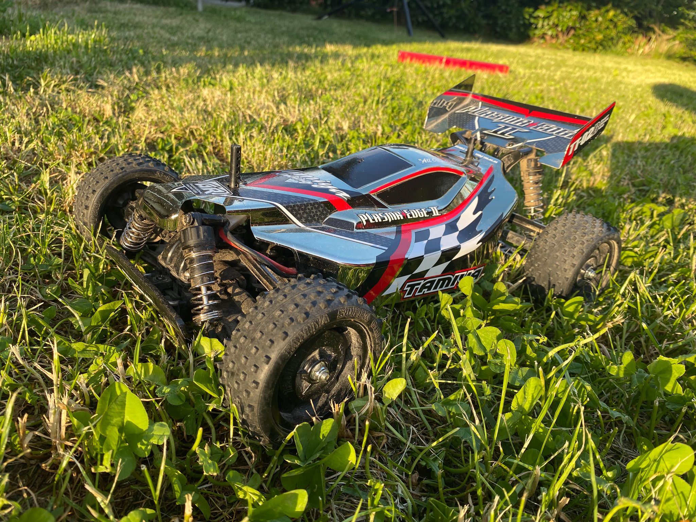
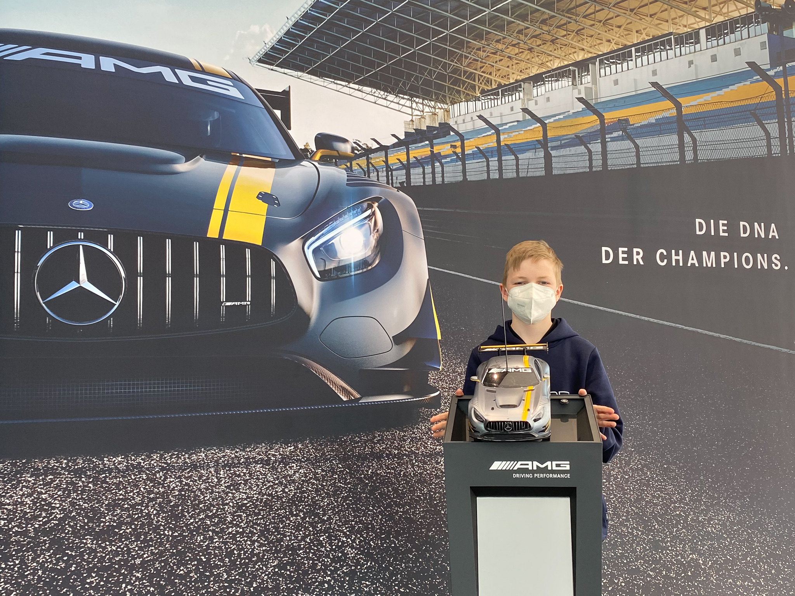
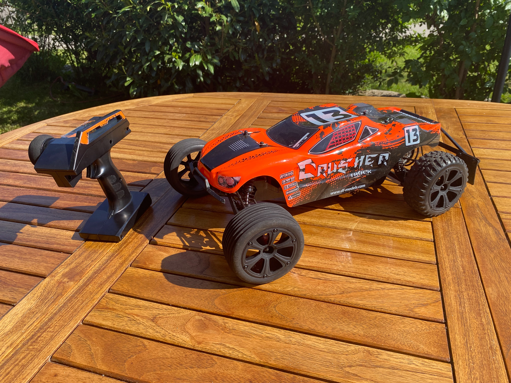
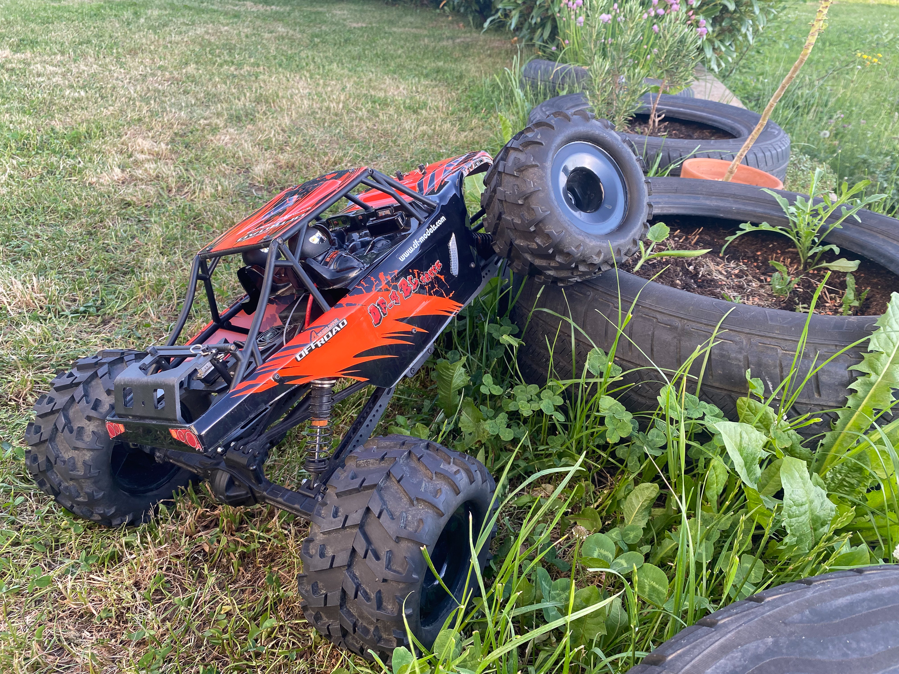
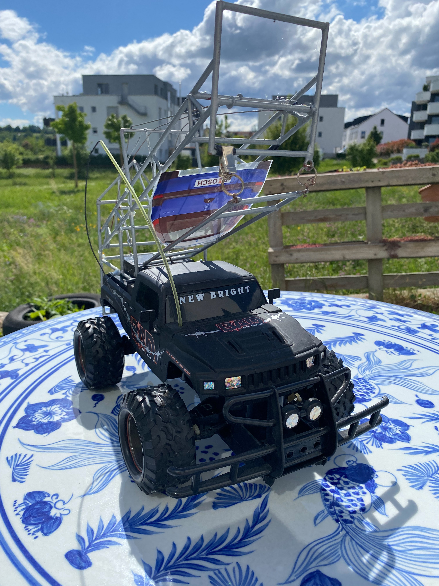
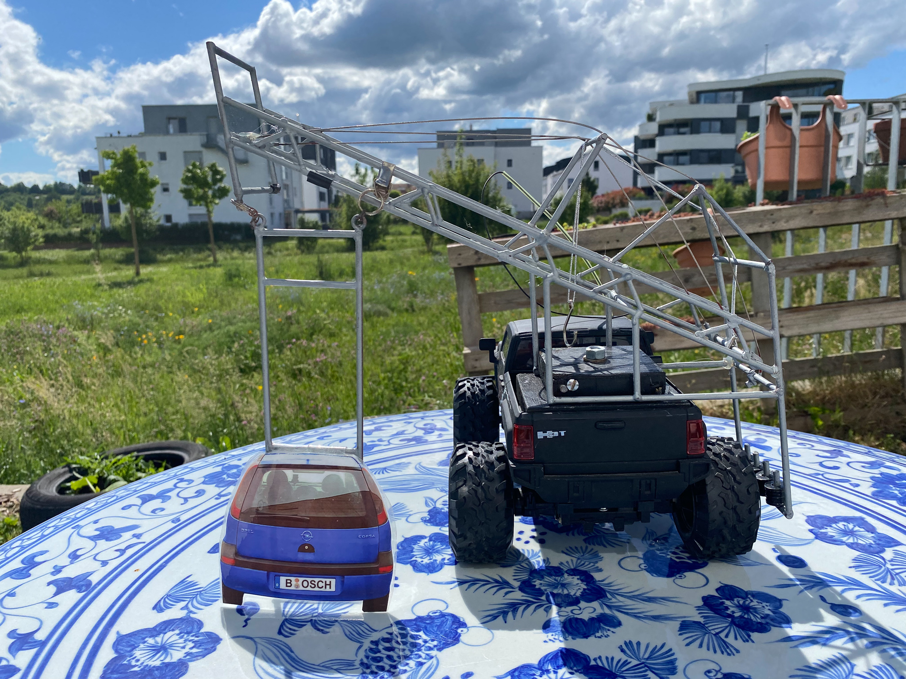

Rennstall: RC - Cars
Plasma Edge II
Information
Edgy, unser erstes realisiertes Selbstbaukit von Tamiya, im Jahr 2019 von Eric und Christian gestartet und zusammen gebastelt. Ein echter Off-Roader als Buggy-Variante im Format 1:10 mit Allradantrieb und standardmäßig mit NickelMetall-Hydrid (NiMh) Batterie-Technologie. Aktuell gemessener Top-Speed: 24 km/h. Mit viel Liebe zum Detail zusammengebaut, das es ursprünglich als Wettbewerbsauto zum benachbarten Rennstall Hutschi-Racing aufgebaut wurde. Letzterer hat dann doch keinen Wagen an den Start bringen können.Modifikationen/Mods
Derzeit noch keineAMG GT3
Information
DerModifikationen/Mods
Derzeit noch keine. Allerdings ist der Antriebsstrang sehr laut und braucht mal eine Inspektion.Der Crusher
Informationen
Der Crusher ist ein RTR (Ready To Race/Run) Model von DF Models und war ein Geburtstagsgeschenk zu Evas 9. Geburtstag. RTR bedeutet, dass gleich losgefahren werden kann, ohne das gebastelt werden muss. Dennoch ist es kein Spiezeug, sondern ein echter Modellbau-Racer und ein richtiges Beast. Er ist ein Offroad-Modell, verfügt allerdings nur über einen Hinterrad-Antrieb. Dieser Antrieb, im Gelände nachteilig, sorgt allerdings auf der Straße für die höchste Geschwindigkeit in unserem Rennstall.Modifikationen/Mods
Derzeit noch keineBig Daddy
Informationen
Big Daddy ist ebenfalls ein RTR Model von DF Models. Als Offroad-Modell im Maßstab 1:8 ist er wahrlich der DICKE in unserem Rennstall. Als ich den Crusher für Eva gekauft hatte, stand Big Daddy als gebrauchtes Schnäppchen im Geschäft herum ... Ich konnte nicht widerstehen. :-)Big Daddy ist nicht nur das größte Modell, sondern verfügt auch über einen Lithium-Polymer-Akku (LiPo) und damit über die derzeit performanteste Batterie-Technologie. Dennoch, Größe, Gewicht und das sehr weiche, auf Offroad-Abenteuer ausgelegte Fahrwerk, kosten Geschwindigkeit, weswegen der Crusher dennoch der schnellere Wagen ist.
Modifikationen/Mods
Derzeit noch keineAnleitung
3079_DF4-BL_Manual.pdfCrashmatik - der Leiterwagen
 Informationen
Die Crashmatik ist ein Abschiedsgeschenk meiner Kollegen aus Leonberg von 2013, als wir nach China aufgebrochen waren und ich meinen Arbeitsplatz von Leonberg nach Suzhou änderte. Sie ist ein liebevoller Nachbau einer echten Crashmatik im Format 1:1, welche ich für Bosch aufgebaut hatte, um Fahrerassistenzsystem bei hohen Geschwindigkeiten und möglichen Kollision testen zu können. Die kollisionsfähige Silhouette, die im Original sich für Radar und Videosysteme quasi identisch zu einem echten Fahrzeug verhalten haben, ist einem Opel Corsa C nachempfunden. Das Auto, welches ich zu dem Zeitpunkt gefahren bin. :-)Modifikationen/Mods
Das Fahrzeug ist mir sehr viel Liebe zum Detail aufgebaut, aber leider nicht mehr funktionsfähig. Von daher leider nur ein Schau-Modell.Übersichtstabelle
| Renner | Baujahr | Fahrer | Typ | Gelände | Antrieb | Top-Speed | Batterie-Technologie | Kommentar |
|---|---|---|---|---|---|---|---|---|
| Plasma Edge II | 2019 | Eric, Christian | 1:10 Buggy | Off-Road | Allrad-Antrieb | 24 km/h | NiMh | Tamiya Baukasten - DIY |
| AMG GT3 | 2020 | Eric | 1:10 GT Rennwagen | Straße, Asphalt | Allrad-Antrieb | 24 km/h | NiMh | Tamiya Baukasten - DIY |
| Der Crusher | 2021 | Eva | 1:10 Truck | Off-Road | Hinterrad-Antrieb | 34 km/h | NiMh | RTR - Ready To Race |
| Big Daddy | 2021 | Christian | 1:8 Truck | Off-Road | Allrad-Antrieb | 24 km/h | LiPo | RTR - Ready To Race |
| Crashmatik | 2013 | Christian | 1:12 Truck | Off-Road | Hinterrad-Antrieb | 0 km/h | - | - |